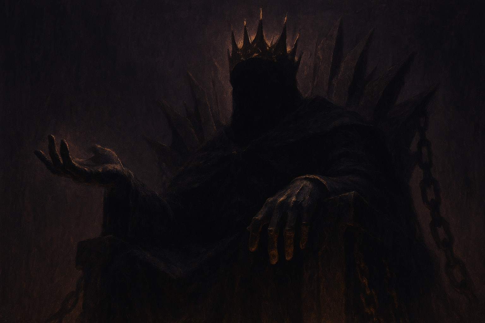
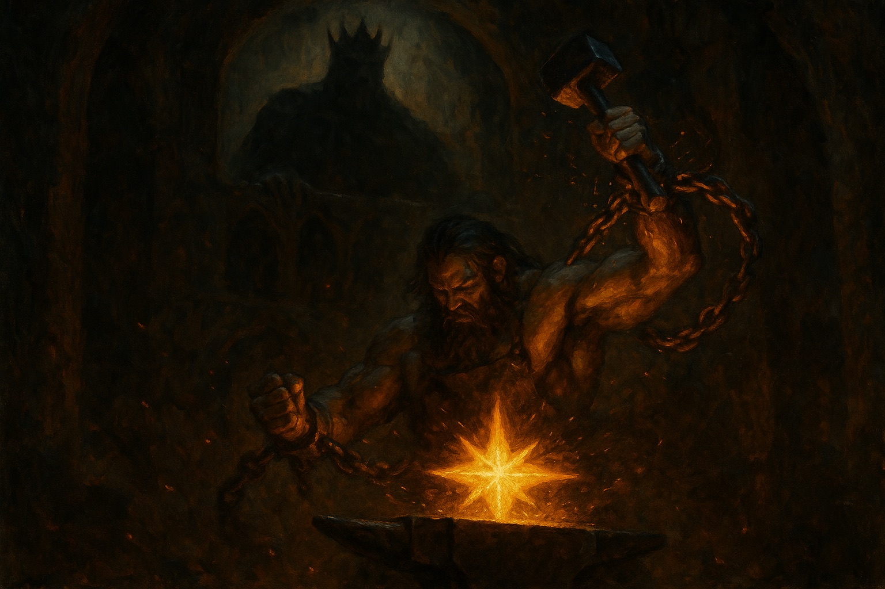
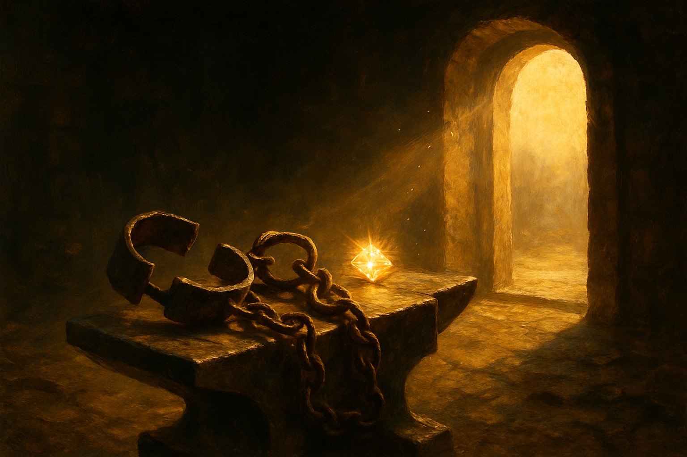
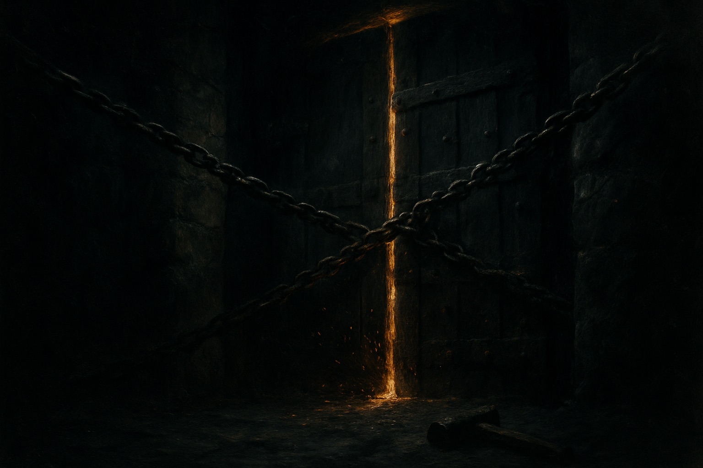

Deepening the Fiction
A proposal for the next story layer — graphics, text, sound, music, and memory — with working prototypes. Nothing here changes a mechanic.
Where we are. The frame is planted and it works: a smith in chains, a king who demands, eight locks, a legend that grows. A newcomer feels the premise in ten seconds. That was the legibility pass — renting a story everyone already knows.
What's missing is depth — and depth is not more lore text. It is characters that change, a place that breathes, an arc inside each run, and memory that accumulates across runs. Story should ride the beats the player already touches (the deal, the tally, the boss, the death) — it should never add a click.
The one structural idea underneath everything below: the game currently has one character — the King. Great fiction in this genre runs on triangles. Give the run three voices: the King (pressure), the Friend (hope), and the Forge itself (a fellow prisoner). Every channel — art, barks, sound, music — then has someone to speak for.
Five gaps between "a frame" and "a story"
Each proposal that follows exists to close one of these. If an idea doesn't close a gap, it didn't make this page.
Only the King speaks. No ally, no witness, no rival. Dread with no warmth flattens into noise.
The board is abstract space. You are told you're in a cell; you never see a wall, a window, the passage of days.
Turn 40 feels like turn 4, only harder. The King never changes his attitude as you go from Shackled to Kingbreaker — but he should be getting nervous.
Every run is amnesiac. Past deaths and escapes leave no visible trace except a number on a roll.
The audio layer signals how big, never who or what. No motif belongs to the King, the Friend, or the chains.
The dopamine engine and the coach are load-bearing. Story must ride existing beats, respect the reserved-vocabulary rule (GORGES-class moments stay rare), and pin itself low during trials.
Three voices in the dark
One writing system powers most of the text ideas below. Three speakers, each with hard voice rules, each owning specific UI surfaces — so every string in the game is someone talking, never a system message.
Voice: cold court language. Short. Possessive. Never explains, never apologizes. Speaks in decrees and appetites.
Owns: the demand HUD, boss intros & taunts, the feast ladder, the fail-confirm, death.
His arc (the new part): he changes as your legend grows. Act I he hasn't learned your name. By "The Throne's Rival" his taunts turn brittle — greed curdling into fear. The player reads their own progress in his tone.
"Another day, another trinket. Do not bore me, smith."Act I · rank: unknown
"They sing about you in the kitchens. I had the cook flogged."Act V · rank: noticed
"Guards at your door are for your protection. Naturally."Act VII · rank: feared
Voice: whispers. Practical, warm, hurried — always about to be caught. Never named; signs nothing.
Owns: the Undermarket (it is theirs), the Emberheart Charm, restock notes, one-time "first" moments.
Their arc: present early, quieter in the dark middle acts (a scripted silence after Lock V — "the guards doubled; I can't come for a while"), and back before the last lock. One relationship, felt through absence.
"Under the loose stone. Paid for with the King's own coin — I thought you'd like that."Undermarket restock
"It was my mother's. It forgives one failure. Don't waste it being brave."The charm, turn 1
Voice: old, patient, elemental. Speaks in craft — heat, iron, breath.
Owns: the anvil, the mulligan relent, the tutorial trials, CONTINUE ("THE FORGE REMEMBERS YOU").
The twist that reframes everything: the Forge is also chained — a magical being the King enslaved long before you. Late-act lines let it say so. Victory frees you both, which retroactively explains why it helps you, relents on dead hands, and remembers you between sessions.
"I was old when his grandfather's grandfather stole me. Strike well, and we both see the sky."Act VII, one-time
A place that breathes
The board earns a where and a when — persistent, ambient, never in the way of cards. Two of these are prototyped live below.
G1 · The barred window a corner of sky = the passage of days, and freedom kept visible
G2 · The chain of eight the act tracker becomes the literal object of the story
G3 · The King's hand reserved apex visual — the demand embodied

G4 · Cast portraits & set dressing one new image, several reuses
A hooded figure at a floor grate, candle-lit, passing a small bundle through the bars. Used on: Undermarket restocks, the charm's arrival, the charm's shatter, and the Act-VI "silence" beat.
gpt-image-1 prompt, same palette as king.jpg: "hooded figure kneeling at an iron floor-grate in a dungeon corridor, passing a small wrapped bundle down through the bars, single candle, warm ember light against near-black plum darkness, painterly dark fantasy, no text"
A whisper-faint stone vignette at the screen's edges (multiply-blended CSS, opacity ~.05–.08) plus a chain motif anchoring the score HUD — the tithe plaque hangs from links. The board reads as a room without a single pixel competing with the cards.
Also: rank-ups restyled as the guards' notice board woodcut — "TALK OF THE GUARDROOM" pinned like a wanted poster. Text-only change to the existing overlay plus a paper texture.



Words that know who's speaking
Text is the cheapest channel and the one that carries the arc. Everything here is string tables — zero mechanics.
T1 · The King's dynamic barks ~60 lines that make him a character instead of a label
T2 · Days, not turns the single cheapest world-building string in the game
T3 · Decrees under the door the one new surface — 2.5s, skippable, after each boss
T4 · Death epitaphs by depth the death screen learns how far you got
T5 · The rest of the text batch
Ten cards carry the prison fiction; the rest still speak generic fantasy. Finish the sweep with a rule: every flavor line names the world outside the cell — the kitchens, the mines, the old kingdom, the guards' debts. The deck becomes the world-building.
e.g. Coin of the Vale → "The Vale still mints them with the old queen's face. The King melts every one he finds."
"SIGN YOUR WORK, SMITH" already collects a name. Use it exactly three times: the Act-V decree ("I know your name now, ____."), the final boss intro, and the victory ledger. Rarity keeps it chilling instead of gimmicky.
Sound that means someone
The engine already scales intensity beautifully. This layer attaches identity: a motif per voice, a foley family for the chains, and a room tone for the cell. Every prototype below is synthesized live — click to hear. All of it fits the existing zero-dependency WebAudio module.
A score with an arc
The music already ramps BPM and density with Heat. What it lacks is harmonic story — the same run-arc the King's barks carry, told in mode and colour. And one signature idea: the worksong.
M1 · The harmonic map of a run
| Acts | Feel | Harmony | What enters | Story job |
|---|---|---|---|---|
| I–II | Hopeless routine | Sparse aeolian, open fifths | Pad + heartbeat pulse only | The cell. Cold. Nothing promised. |
| III–IV | The work takes hold | Dorian (current groove) | Bass unlocks, hats, first stabs | Craft as defiance — hands find rhythm. |
| V–VI | The dark middle | Dorian with phrygian bleed | Detuned doubles, longer reverbs | The Friend goes quiet. Doubt. |
| VII–VIII | Defiance | Raised 6th, lydian flashes | Lead arp brightens, worksong hum | You are not hiding anymore. |
| Victory | Release | The King's motif inverted, major | Worksong sung "free", full voice | His theme becomes your anthem. |
Implementation-wise this is chord-table swaps at bar seams — exactly the mechanism the boss mode-swap already uses (Music.ALT by reference), extended to an act index. Each of the eight locks additionally gets one signature timbre stacked on the phrygian swap (The Silting = waterlogged detune, The Iron Cage = choked mutes, The Skimming = coins-on-marble percussion…), so bosses are recognizable with eyes closed.
M2 · The worksong the smith hums when the work is going well — the player's own melody
M3 · Through the wall
The wall remembers
Roguelike story lives between runs. The game already has the data — the run history and the honor roll — it just never draws it as fiction.
X1 · Scratches on the cell wall your run history as prisoner tallies on the start menu
ch-af-scores — data the client already holds. The menu quietly becomes: you have been here before, and someone got out.The honor roll is already framed as "smiths who forged their freedom." Pull one line of it into the fiction: on death, a faint scratched note under the stats — "Dag of the North walked free in 48 days. The wall remembers." Real player, real number, already public on the roll.
Hope delivered by another player's actual victory — multiplayer storytelling with zero new data.
The one-time-flag system already exists (first boss, first mythic, first record, now first forge). Extend it to the Friend: first charm shatter ("I can get another. Give me time."), first Act V ("No one I know has seen the fifth lock."), first victory — the Friend's only signed line.
What to build, in what order
Scored on story-per-effort. Tier 1 is roughly one build day total and closes gaps 2, 3 and 5; nothing in it touches a mechanic or a test.
| # | Idea | Channel | Closes gap | Impact | Effort | Risk | Tier |
|---|---|---|---|---|---|---|---|
| T1 | King's dynamic barksstring tables on the feast-ladder slot | Text | 3 · arc | High | S | none | 1 |
| T4 | Death epitaphs by act8 strings on the death screen | Text | 3 · arc | High | S | none | 1 |
| T2 | Days, not turnsdisplay strings only; internals stay `turn` | Text | 2 · place | Med | S | none | 1 |
| G2 | Chain-of-eight act tracker+ chain-break foley on defeat | Gfx+Snd | 2, 5 | High | M | HUD space | 1 |
| S-a | King + Friend motifs, chain foleyextends AudioFX; ~120 lines | Sound | 5 · meaning | High | M | mix balance | 1 |
| G1 | The barred windowpure CSS, one corner | Gfx | 2 · place | Med | M | clutter — keep small | 2 |
| T3 | Decrees under the doorthe only new surface; boss seam only | Text | 1, 3 | High | M | pacing — hard 2.5s cap | 2 |
| X1 | Scratches on the wallstart menu, from ch-af-scores | Meta | 4 · memory | High | M | none | 2 |
| G4a | Friend portrait + Undermarket voice1 image + ~15 lines | Gfx+Text | 1 · cast | Med | M | art cost (~$0.20) | 2 |
| G3 | The King's hand on boss turnsexisting art, reserved | Gfx | 1, 3 | Med | S | overuse — boss only | 2 |
| T5 | Card flavor batch 2 + name payoff~50 flavors + 3 reserved name uses | Text | 1, 2 | Med | M | none | 3 |
| M1 | Act harmonic arc + per-lock timbreschord-table swaps at bar seams | Music | 3, 5 | High | L | regression on boss swap | 3 |
| M2 | The worksongHeat-gated hum → victory reprise | Music | 3, 5 | High | M | earworm fatigue — gate hard | 3 |
| S-b | Cell ambience + the knock + through-the-wallone filter, one noise bed | Sound | 2, 5 | Med | M | mud — keep at −30dB | 3 |
| X2/3 | Predecessors + Friend firsts | Meta | 1, 4 | Med | S | none | 3 |
| G4b | Cell frame vignette + woodcut rank-ups | Gfx | 2 | Low | M | visual noise | 4 |
| — | "PRESENT THE WORK" on END TURN | Text | 2 | Low | S | muscle memory | test last, alone |
The laws this layer must obey
Story rides existing beats. The decree is the single exception: hard-capped at 2.5s, click-through, boss seam only, never in trials. If a story beat delays the next hand, it dies in review.
The GORGES rule made apex words precious. Same law here: the King's hand = boss turns only; the knock = boss turns only; the death-third = death only; the worksong = Heat-gated. Scarcity is the effect.
The coach's wordless contract wins: no barks, decrees, ambience, or motifs during LEARN. inTrial() already gates Heat and juice — the story layer hangs off the same gate.
Reduced-motion keeps every story beat via colour, text, and sound; mute keeps every beat via text and visuals. No fact may live in only one channel.
Same law as v0.12: internals (state.turn, #tithe, BOSSES keys) never rename. The 70-assertion suite gates every tier before deploy.
This is still the experiment branch. Each tier ships with its build string so /admin can compare retention, run depth and completion against v0.12.2-exp. Story that doesn't move retention is decoration — cut it.